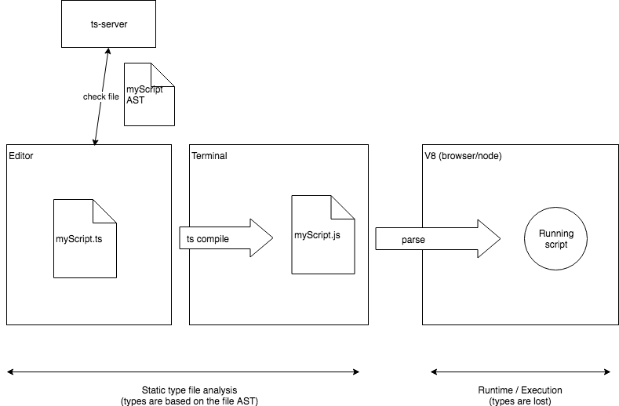

TypeScript
Développé par Microsoft
C’est un sur-ensemble de JavaScript (c’est-à-dire que tout code JavaScript correct peut être utilisé avec TypeScript). Le code TypeScript est transcompilé en JavaScript, pouvant ainsi être interprété par n’importe quel navigateur web ou moteur JavaScript.
auteurs / contributeurs
Anders Hejlsberg) (github profile)
Author of Turbo Pascal, chief architect of Delphi, lead architect of C#, conceptor of .NET framework and core developper and conceptor of TypeScript.
Program Manager of TypeScript
TypeScript lead dev
TypeScript dev (retired)
articles
- blog développeurs sur msdn.org
- dev.com angular basé sur typescript
- angular-et-typescript-un-mariage-heureux : blog.xebia.fr
- definitive guide to typescript
- Top 10 Things to Know about TypeScript - www.developer.com - 20130227
- The TypeScript Tax, A Cost vs Benefit Analysis - Eric Elliott - 20190123
TypeScript Evolution - Marius Schulz
TypeScript lead dev Ryan Cavanaugh about TypeScript and OOP :
“I’m using TypeScript so I have to write OOP code with classes” :: “I got a paintbrush from Home Depot so I have to paint my house orange”
documentation
- Documentation - www.typescriptlang.org
- TypeScript/wiki - github.com/Microsoft
- TypeScript/wiki/FAQ - github.com/Microsoft
- TypeScript specifications
- angular typescript quickstart
Difference between script as a file and script at runtime
Taken from this article from Charly Poly

starters projects
samples - www.typescriptlang.org
TypeScript Node Starter - github.com/Microsoft
See in particular their Type Definition (
.d.ts) Files management which give a lot of infos.
tsconfig.json
tsconfig.json official doc - www.typescriptlang.org
tsconfig.json schema on json.schemastore.org
TypeScript Configuration - angular.io/guide
compiler options
--noImplicitAny
See noImplicitAny in TypeScript Deep Dive from basarat.gitbooks.io
By default this option is set to false.
When a type is not defined by the programmer and when it is impossible to infer it, TypeScript infers an any type, example :
function log(someArg) {
sendDataToServer(someArg);
}
// What arg is valid and what isn't?
log(123);
log('hello world');
When set to true, the compiler raises an error in that case.
It forces the programmer to explicitly set the type and at least the any type which in fact remove type checking (it allows anything).
--strictNullChecks
See Nullable Types section in Advanced Types from TS official handbook
Introduced in TS 2.0.
By default this option is set to false for retro compat purposes.
In JavaScript and without this option in TypeScript, undefined and null are assignable to anything. We can do this :
let toto = 'toto';
toto = null;
Or in TypeScript :
let toto: string = 'toto';
toto = null;
With this is option set to true, it is not possible anymore.
The intent is to avoid null pointers exceptions.
If the option is set, the programmer needs to explicitly declare when a value can be undefined or null like this :
let toto: string | null = 'toto';
toto = null;
toto = undefined; // Still raise error, should have declare toto as 'let toto: string | null | undefined;'
optional parameters
If the option is set and an optional parameter is used, the type is implicitly considered to be an union with undefined :
function f(x: number, y?: number) {
return x + (y || 0);
}
f(1, 2); // OK
f(1); // OK
f(1, undefined); // OK
f(1, null); // error, 'null' is not assignable to 'number | undefined'
declaration files
Introduction - www.typescriptlang.org/docs/handbook
Consumption of *.d.ts files - www.typescriptlang.org/docs/handbook
install a
@types/<lib>package or if the lib itself include a"types"prop in itspackage.jsonit’s already there.See DefinitelyTyped @ github.com for
@typesconsumption and TS publishing doc for"types"prop.Ex : Node.js typings are there.
Ambient Declarations - basarat.gitbooks.io/typescript
Getting started with TypeScript type definitions - medium.com/@jonjam - 20171113
tools
dts-gen - github.com/Microsoft
best practices
managing export / import
export default considered harmful
practice of creating an
index.tsfile inside a directory to re-export files (imply to avoidexport default)
allows destructured import :import { Foo, Bar, Baz } from '../demo'; // demo/index.ts is implied
TSLint
videos
- TypeScript, le JavaScript statiquement typé : Devoxx2015
Migration progressive (passer les
.jsen.tssuffit à migrer surtypescriptet inversement pour rollback)Facilité apprentissage (juste le fait de typer)
Compatible
ES6(ajoute des polyfills, 90% de babel, donc autant faireES5->typescriptplutôt queES5->ES6->TSRefactoring simplifié du fait des types (erreurs à la compilation)
Assitance IDE meilleure (Webstorm nickel)
erreurs tscompiler
Diagnostics are categorized into general ranges. If adding a new diagnostic message, use the first integral number greater than the last used number in the appropriate range.
1000 range for syntactic messages
2000 for semantic messages
4000 for declaration emit messages
5000 for compiler options messages
6000 for command line compiler messages
7000 for noImplicitAny messages
Erreurs courantes après migration ES5/ES6 vers TS
TS2339: Property 'xxx' does not exist on type 'Yyyy'.
Cf issue 6373 : Getting error TS2339: Property does not exist on type for a valid ES6 class
Cf issue 2606 : ES6 should be valid TypeScript
class Car {
constructor(weight) {
this.weight = weight;
}
}is invalid ts code, it will output Error:(3, 14) TS2339: Property 'weight' does not exist on type 'Car'.
class Car {
weight: number;
constructor(weight: number) {
this.weight = weight;
}
}is required by TS.
Anyway it is a non-blocker to generate the target javascript bundle.
If the input code is syntactically correct (prior to type checking) then it can generate ES output, and it is “valid” TS. At this first level, TS is a superset of ES, in that the set of valid TS programs is larger than the set of valid ES programs (because it includes all the valid ES programs plus those with type annotations).
The second level is type-correctness, which is what your error is complaining about. At this level, TS can act as a subset of ES: some valid ES programs, such as your example, are not type-correct TS programs.
error TS2380: 'get' and 'set' accessor must have the same type.
See TypeScript/issues/4087 and TypeScript/issues/2521
A classical pattern in JS with class to define a model is :
class MyClass {
constructor(value) {
this._myDate = value;
}
get myDate() {
return this._myDate;
}
set myDate(value) {
this._myDate = moment(value);
}
}The accessors are used to refine / format the data set to the instance.
But in TypeScript accessors must have the same type, and when converted to TS the compiler raise an error :
class MyClass {
private _myDate: moment.Moment;
get myDate(): moment.Moment {
return this._myDate;
}
set myDate(value: Date | moment.Moment) {
this._myDate = moment(value);
}
}
The workaround is to create a dedicated function but we loose the instance.myDate = new Date(); usage.
class MyClass {
private _myDate: moment.Moment;
get myDate(): moment.Moment {
return this._myDate;
}
set myDate(value: moment.Moment) {
assert.fail('Setter for myDate is not available. Please use: setMyDate() instead');
}
setMyDate(value: Date | moment.Moment) {
this._myDate = moment(value);
}
}Another workaround would be to type _myDate with Date | moment.Moment but we loose a lot of type checking here.
See cons TS2380 rule arguments :
When TypeScript limits JavaScript, it becomes more of a nuisance than an advantage. Isn’t TypeScript meant to help developers communicate with each other?
Also, setters are called Mutators for a reason. If I wouldn’t need any kind of conversion, I wouldn’t use a setter, I would set the variable by myself.
impact with Angular and components inputs from templates.
See pros TS2380 rule arguments :
kitsonk (TypeScript contributor)
IMO, ever since JavaScript allowed accessors, people have potentially created confusing APIs with them. I personally find it confusing that something on assignment magically changes to something else. Implicit anything, especially type conversion, is the bane of JavaScript IMO. It is exactly the flexibility that causes problems.
mhegazy (TypeScript contributor)
After thinking about this some more. i think the issue here is really the complexity of the implementation.
He flagged issue as “Too Complex” and “Design Limitation” labels after that post then closed the issue 2521.
kitsonk (TypeScript contributor)
The labels on the issue indicate it is a design limitation and the implementation would be considered too complex, which essentially means that if someone has a super compelling reason why this should be the case, it is not going anywhere.
features
Control Flow Based Type Analysis
See what’s new in TS@2.0 - www.typescriptlang.org
TypeScript 2.0: Control Flow Based Type Analysis - mariusschulz.com/blog - 20160930
With TypeScript 2.0, the type checker analyses all possible flows of control in statements and expressions to produce the most specific type possible (the narrowed type) at any given location for a local variable or parameter that is declared to have a union type.
conditional types
Added in TypeScript 2.8 see release notes.
See Conditional Types section in Advanced Types from TS official handbook
How are you using conditional types? - www.reddit.com/r/typescript - 20181010
Super nice answer here
- Conditional types in TypeScript - artsy.github.io/blog - 20181121 (Super nice article with practical examples)
Conditional types probably aren’t something you’ll write every day, but you might end up using them indirectly all the time. That’s because they’re great for ‘plumbing’ or ‘framework’ code, for dealing with API boundaries and other behind-the-scenes kinda stuff.
type assertion
See Type assertions @ Basic Types - www.typescriptlang.org
Sometimes you’ll end up in a situation where you’ll know more about a value than TypeScript does.
Type assertions are a way to tell the compiler “trust me, I know what I’m doing.”
A type assertion is like a type cast in other languages, but performs no special checking or restructuring of data. It has no runtime impact, and is used purely by the compiler.
The “angle-bracket” syntax :
let someValue: any = "this is a string";
let strLength: number = (<string>someValue).length;The as syntax :
let someValue: any = "this is a string";
let strLength: number = (someValue as string).length;The first is the legacy one and the second has been added to be compatible with JSX (TSX with TypeScript).
The first one clashed with JSX syntax.
The second is now considered to be the syntax to use.
type-assertion - basarat.gitbooks.io/typescript
type aliases
See Type aliases @ Types Aliases - www.typescriptlang.org
An interface or literal type with just a call signature can be written as a function type.
Interface vs Type alias in TypeScript - Martin Hochel - 20180312
what’s the difference between using
typeandinterfacefor defining compile time types within TypeScriptofficial documentation is obsolete since TS@2.1 :
- errors messages display type alias name correctly
- types aliases can be extended (extended by an
interfaceor implemented by aclass)- types aliases can be used for type alias extension via intersection operator
&
type guards
See Type Guards and Differentiating Types - www.typescriptlang.org
A type guard is some expression that performs a runtime check that guarantees the type in some scope.
Checking the type of an object in Typescript: the type guards - medium.com/ovrsea - 20181122
What does the is keyword do in typescript? - stackoverflow.com - 20161017
function isString(test: any): test is string{
return typeof test === 'string';
}
function example(foo: any){
if(isString(foo)){
console.log('it is a string' + foo);
console.log(foo.length); // string function
}
}
example('hello world');Inside a type guard function, we can check :
- that a property exist with the
inkeyword ('propname' in foowherefoois the object passed to the type guard function to check onto) - that a property is from the
typeofnumber,string,boolean, orsymboland nothing more.
It is impossible to check if a property is from the typeof a custom type because there is not the required meta data available at runtime.
unknown type
The purpose of the unknown type is to force the developper to check the structure with type guards or assert the type with type assertion.
See what’s new in TS@3.0 - www.typescriptlang.org
unknownis the type-safe counterpart ofany.
Anything is assignable tounknown, butunknownisn’t assignable to anything but itself andanywithout a type assertion or a control flow based narrowing.
Likewise, no operations are permitted on anunknownwithout first asserting or narrowing to a more specific type.
TypeScript 3.0: Exploring Tuples and the Unknown Type - auth0.com/blog - 20180821
We can use an
unknowntype if and only if we perform some form of checking on its structure.
We can either check the structure of the element we want to use
or we can use type assertion to tell TypeScript that we are confident about the type of the value
Dependency Injection with TypeScript
Using the classical functional style
Using type aliases to define function types.
In vanilla JavaScript it is dead simple, we use curried function and partial application :
// dependency function without deps
const doSomethingElse = (arg) => {
// impl ...
}
export default doSomethingElse;
// function with dependency
const makeDoSomething = ({ doSomethingElse }) => (arg) => {
// impl ...
const value = doSomethingElse(111);
// impl ...
}
export default makeDoSomething;
// caller
import doSomethingElse from './do-something-else'
import makeDoSomething from './make-do-something'
const doSomething = makeDoSomething({ doSomethingElse });
doSomething('toto');
In TypeScript we can use the same pattern, and we can type dependencies using Type Aliases.
We could prefer type aliases instead of interfaces because of TSLint callable-types rule.
The same example as above in TypeScript becomes :
// dependency function without deps
export type DoSomethingElseFnType = (arg: number) => number;
export function doSomethingElse(arg: number): number {
// impl ...
}
// function with dependency
import { DoSomethingElseFnType } from './do-something-else';
export type = DoSomethingFnType = (arg: string) => string;
export function makeDoSomething(deps: { doSomethingElse: DoSomethingElseFnType}): DoSomethingFnType {
return (arg: string): string => {
// impl ...
// you reach your dependency through deps destructuring and benefit from typing :
const value = deps.doSomethingElse(111);
// impl ...
}
}
// caller
import { doSomethingElse } from './do-something-else';
import { DoSomethingFnType, makeDoSomething } from './make-do-something';
const doSomething: DoSomethingFnType = makeDoSomething({ doSomethingElse });
doSomething('toto');
Using POO style by hand
You don’t need any typing here, because obviously a class is a type.
// dependency class without deps
export class SomethingElse {
public static makeSomethingElse(): SomethingElse {
return new SomethingElse();
}
private constructor() {
}
public doSomethingElse(arg: number): number {
// impl ...
}
}
// class with dependency
import { SomethingElse } from './something-else';
export class Something {
public static makeSomething(deps: {somethingElse: SomethingElse}): Something {
return new Something(deps);
}
private somethingElse: SomethingElse;
private constructor(deps: {somethingElse: SomethingElse}) {
this.somethingElse = deps.somethingElse;
}
public doSomething(arg: string): string {
const value = this.somethingElse.doSomethingElse(111);
// impl ...
}
}
// caller
import { SomethingElse } from './something-else';
import { Something } from './do-something';
const somethingElse: SomethingElse = SomethingElse.makeSomethingElse();
const something: Something = Something.makeSomething({ somethingElse });
something.doSomething('toto');Using POO style with decorators
See decorators from www.typescriptlang.org/docs/handbook.
Dependency Injection in TypeScript - 20180205
InversifyJS - github.com/inversify
A powerful and lightweight inversion of control container for JavaScript & Node.js apps powered by TypeScript.